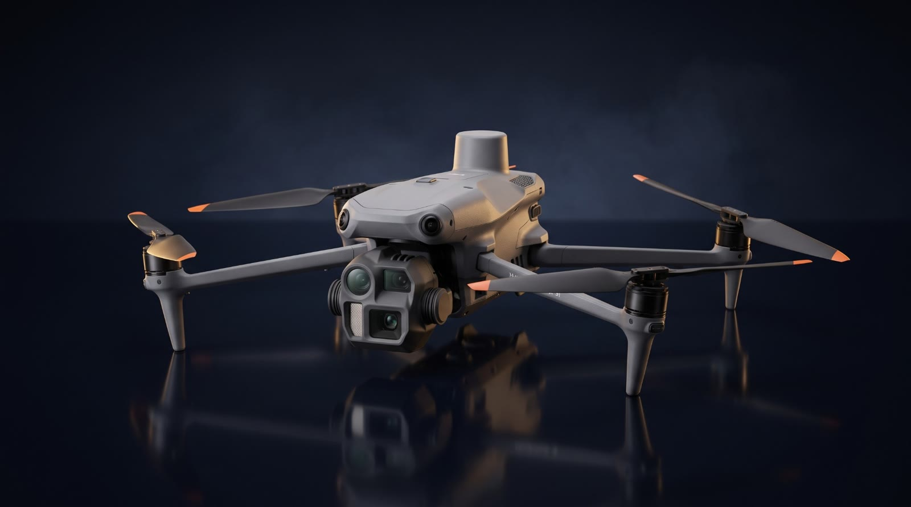
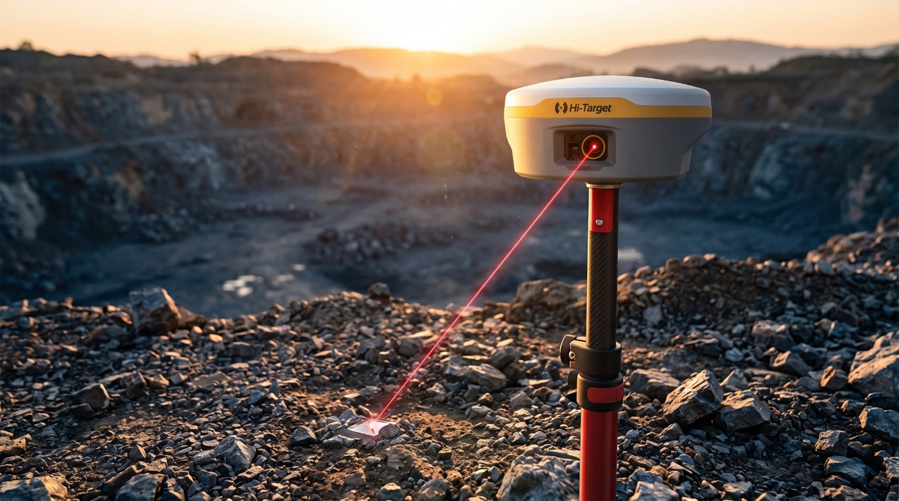

Harita · Maden Planlama · Dron · Yazılım
Sahadan sayısala, santimetre hassasiyetinde.
Halihazır haritadan açık ocak tasarımına, orman izinlerinden 3B modellemeye kadar; madencilik ve harita mühendisliğinin her aşamasında yanınızdayız.
Nasıl çalışıyoruz
Arazi, ölçüldüğü an veriye dönüşür.
Dron ve GNSS ile topladığımız ham veriyi eş yükselti eğrilerine, yüzey modellerine ve CAD çizimlerine dönüştürüyoruz.
- 01Saha ölçümü — Matrice 4E ve V600L
- 02Veri işleme — ortofoto, DEM, nokta bulutu
- 03Teslim — harita, hacim raporu, CAD
Dron ile Hava Görüntüleme
Günlerce sürecek ölçüm, tek uçuşta.
RTK destekli dronlarımızla hektarlarca alanı kontrol noktası kurmadan haritalıyor; ortofoto, yüzey modeli ve hacim hesaplarını hızla teslim ediyoruz.
Maden Planlama ve 3B Modelleme
Ocağınızın her basamağı, santimetre ölçeğinde.
Açık ocak tasarımı, sondaj modellemesi, dekapaj, kazı-dolgu ve rezerv hesapları. Sahanızın 3B modelini çıkarıp planlamanızı sayısallaştırıyoruz.

Ekipman Parkımız
DJI Enterprise
Matrice 4E
Haritalama ve fotogrametri dronu. Ortofoto, yüzey modeli, nokta bulutu ve 3B modelleri tek uçuşta üretiyoruz.
- 1 cm+1 ppmRTK yatay doğruluk
- 49dkUçuş süresi
- 20MP4/3" mekanik deklanşör
- YKN'sizKontrol noktasız harita

Ekipman Parkımız
Hi-Target
V600L GNSS
Lazerli GNSS RTK alıcısı. Ulaşılması zor noktaları lazerle, dokunmadan ve milimetre düzeyinde doğrulukla ölçüyoruz.
- 8mm +1 ppmRTK yatay doğruluk
- 1408GNSS kanalı
- 2cm10 m içinde lazer ölçüm
- IMUKalibrasyonsuz eğik ölçüm